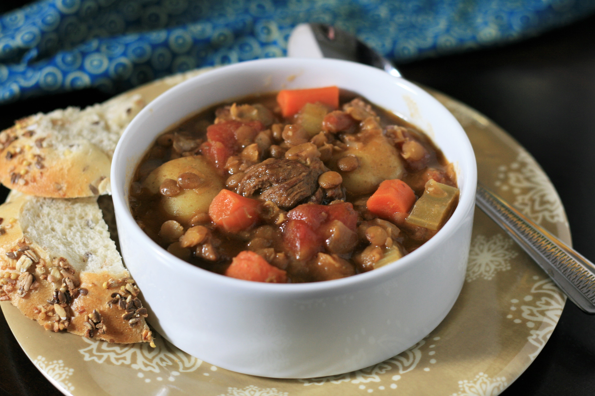

Beef and Lentil Stew

Ingredients
- 2 tablespoons all-purpose flour
- 1 pound flank steak, cut into 1/2-inch cubes
- 2 tablespoons oil, or more as needed
- 4 carrots, chopped
- 1 onion, diced
- 1 stalk celery, thinly sliced
- 2 cloves garlic, minced
- 1 (14.5 ounce) can diced tomatoes
- 1 cup dry lentils
- 4 cups beef broth
- 2 teaspoons dried rosemary
- 11 ounces baby potatoes with skin
- 1 pinch salt and freshly ground black pepper to taste